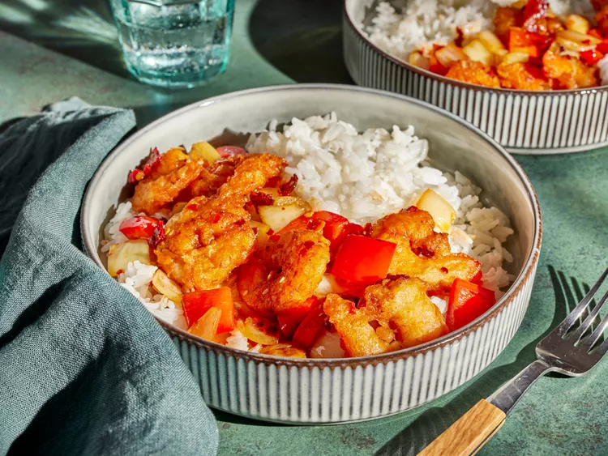

Copycat Chili Crisp Shrimp

Description
This spicy copycat chili shrimp will be the perfect amount of spice to
your meal.Your tastebuds will sing with joy eating this delicious meal. It
is perfect to be paired with rice and veggies of your choice.
Ingredients
- 1 pound large shrimp, peeled and deveined, tails removed
- 1 quart canola oil, for frying
- 1/4 cup self rising flour
- 1/4 cup potato starch or cornstarch
- 1/2 teaspoon kosher salt
- 1/8 teaspoon cayenne pepper
- 1/2 cup sparkling water, chilled
- 3 tablespoons chili crisp
- 2 tablespoons reduced-sodium soy sauce
- 2 tablespoons water
- 1 tablespoon honey
- 1 tablespoon vegetable oil
- 1 red bell pepper, chopped into 3/4-inch pieces
- 1 yellow onion, chopped into 3/4-inch pieces
- 1 cup cooked rice
Steps
- Gather all ingredients
-
Preheat the oven to 200 degrees F (95 degrees C) Line a baking sheet
with paper towels
-
Heat canola oil in a large saucepan to 375 degrees F (190 degrees C).
Blot dry shrimp with additional paper towels.
-
Whisk together self-rising flour, potato starch, salt, and cayenne
pepper in a small bowl. Add sparkling water; whisk until flour
disappears and the mixture resembles crepe batter.
-
Coat 6 shrimp at a time in batter. Fry shrimp in the hot oil, making
sure they don't stick together, until golden brown and crisp, about 3
minutes. Drain on prepared baking sheet and keep warm in the oven while
frying remaining batches.
-
Whisk together chili crisp, soy sauce, water, and honey in a small bowl.
-
Heat vegetable oil a large skillet or wok over medium high heat. Add
pepper and onion to skillet and cook until translucent and slightly
browned, 5 minutes. Remove from heat. Add cooked shrimp and chili oil
mixture. Toss until well coated. If desired, serve with hot cooked rice.
HOME